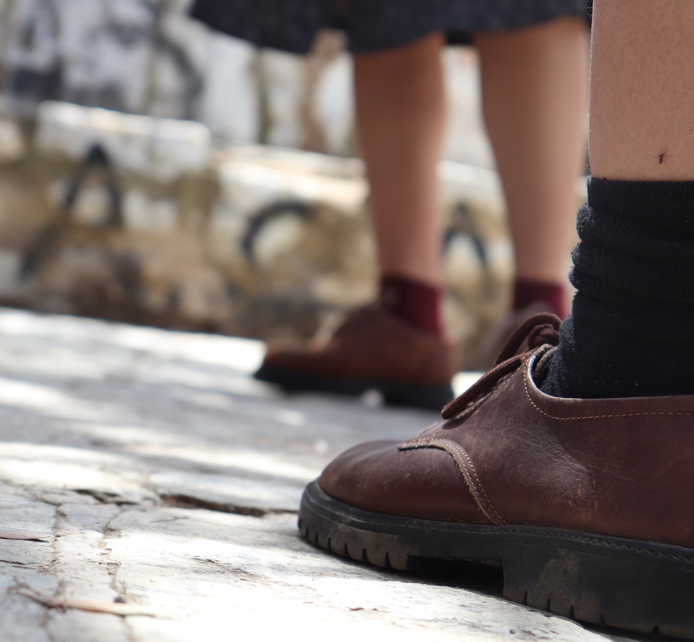

Moloima

Memories and collective experiences attempt to communicate through shared loss; within this “losing,” they become comfort and a lullaby. Six dancers set the rhythm of their movement with their own voices, which become distorted according to motion and physical exhaustion.
Multiple reference relationships emerge—both to the space they occupy while moving, and to the time they traverse backward through memory and forward through intention. The composition is based on a movement interpretation of the Greek mourning song (moiroloi), in its artistic and sociological dimensions.
The work was created as part of the 3rd-year choreography course at the Higher Professional School of Dance “Aktina”.
Credits
Idea / Concept / Choreography: Anthie Stasinou
Dancers: Annamaria Karounou, Antzy Sarigeorgiou, Olga Kalantzi, Panagiota Bafouni,
Fani Vakalopoulou, Eirini Oikonomidou
Vocal Direction: Giorgis Karras
Athens School of Fine Arts / Athens Video Dance Project, Athens — January 2022
Lycabettus Festival — Two Hills, Athens — May 2021